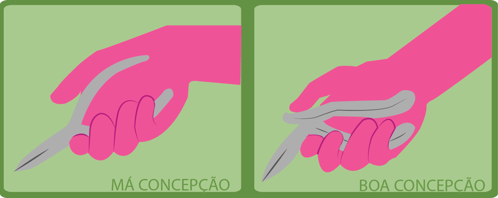

4 - Ferramenta e controles manuais
As ferramentas manuais necessitam ser utilizadas de acordo com os requisitos ergonômicos. Quando estas não estão ajustadas ao trabalhador individual ou à tarefa, provocam efeitos negativos à saúde, sendo estas concebidas de modo ajustado, proporciona o bom posicionamento e movimentos corporais, adequando dessa forma a produtividade e o bem estar do trabalhador

CUIDADO NUNCA É DEMAIS. FIQUE ATENTO!!
- 1 - EVITAR AS FERRAMENTAS MANUAIS DE MÁ QUALIDADE.
- 2 - FAZER OPÇÃO POR FERRAMENTAS QUE POSSIBILITE AO TRABALHADOR A UTILIZAÇÃO DOS MÚSCULOS MAIORES DOS OMBROS, BRAÇOS E PERNAS, EM VEZ DE PEQUENOS MÚSCULOS DOS PULSOS E DEDOS.
- 3 - PROCURAR MANTER OS COTOVELOS PRÓXIMOS DO CORPO, ASSIM, EVITAR MANTER UMA FERRAMENTA EM UMA POSIÇÃO CONTINUAMENTE LEVANTADA OU AGARRAR UMA FERRAMENTA PESADA.
- 4 - OPTAR POR FERRAMENTAS QUE TENHAM O PESO EQUILIBRADAMENTE DISTRIBUÍDO E ASSEGURAR A SUA UTILIZAÇÃO NA POSIÇÃO ADEQUADA.
- 5 - ASSEGURAR QUE NO MOMENTO DE UTILIZAR A FERRAMENTA O PULSO NÃO SE CURVE.
- 6 - ESCOLHER FERRAMENTAS QUE POSSAM SER UTILIZADAS COM AS DUAS MÃOS, COMO: TESOURAS, PINÇAS OU ALICATES. ESTES NÃO PODEM ULTRAPASSAR A MÃO.